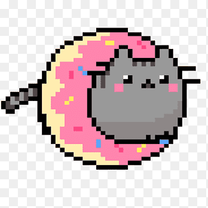

Nyan Cat es un gato volador de pixel art con cuerpo de Pop-Tart que deja un arcoíris mientras suena una canción divertida. 😸🌈🚀
Hay demasiados diseños de nyan-cat en el mundo! Unos con gorrito navideño y otros con lentes de sol, también estos pueden ser de diferentes tipos de colores y tamaños.
1.Nyan cat original, este diseño es el más conocido por la comunidad, ya que es el más famoso y bonito!! 🐱

2. Nyan cat Pusheen, este diseño es un favorito entre los fans del meme 🐱

3. Nyan cat version mala, esta versión es la que tiene un diseño más sencillo y menos detallado 🐱
 Si quieres enlaces relacionados con **Nyan Cat**, puedes hacer algo parecido a esto:
```html
Si quieres enlaces relacionados con **Nyan Cat**, puedes hacer algo parecido a esto:
```html